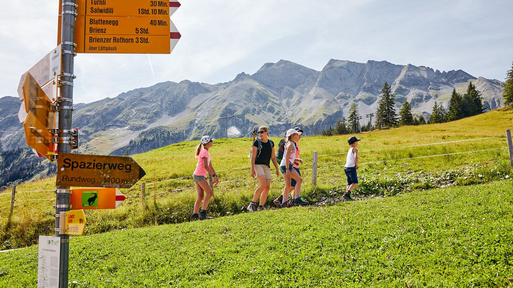
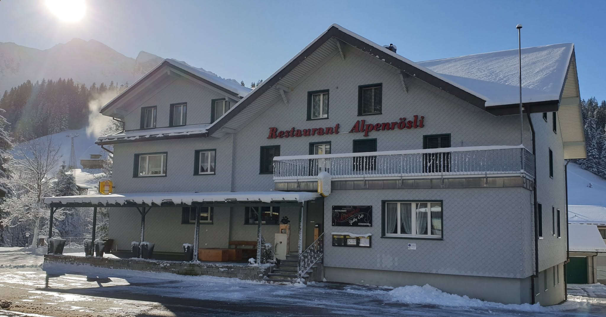
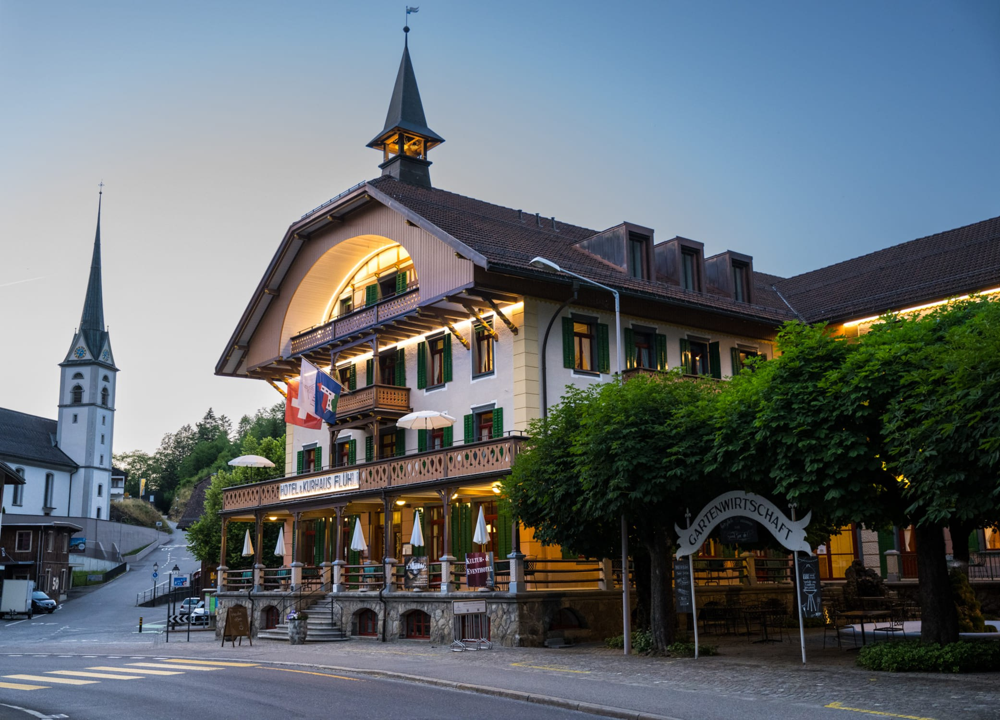
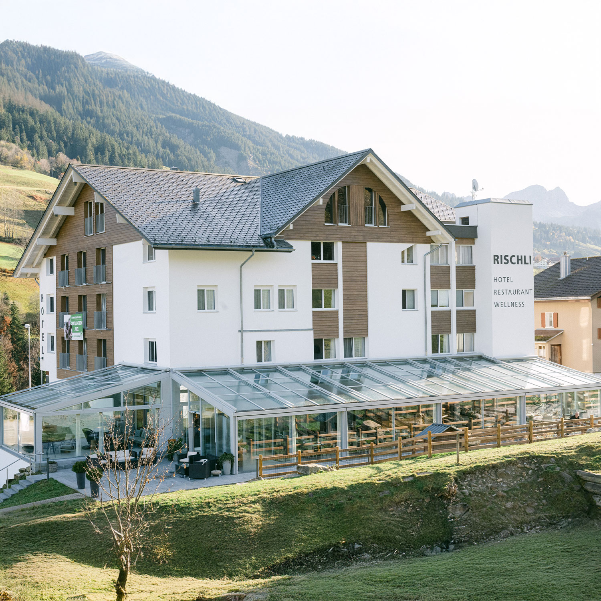
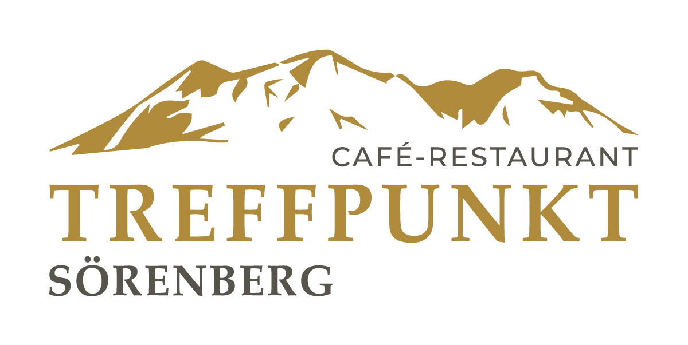
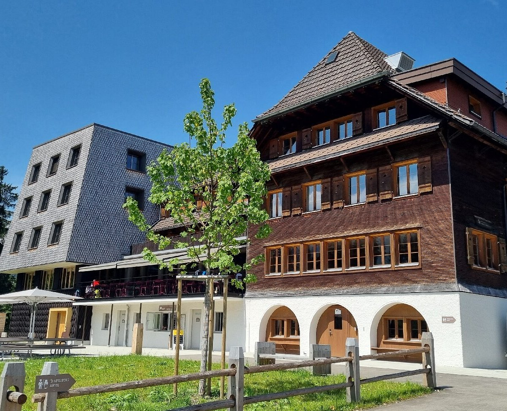

Aktivitäten
Das ganze Jahr erlebenswert
Aktivitäten
Das ganze Jahr erlebenswert
Winter
-
Skifahren13 Anlagen zwischen 1165 m und 2340 m Höhe – ca. 8–10 Minuten zu Fuss bis zur nächsten Bahn. Pisten für alle Niveaus, auch für Kinder geeignet. Skischule mit Angeboten für ganz kleine Kinder.
-
Schneeschuh & WinterwandernMarkierte Schneeschuhrouten durch verschneite Wälder und Moorlandschaften.
-
SchlittelnNatürliche Rodelabfahrten für Gross und Klein – familienfreundlicher Winterspass.
-
EislaufenEislaufbahn im Dorf – Spass auf dem Eis für die ganze Familie.
-
LanglaufenGepflegte Langlaufloipen für Klassisch und Skating – vom Sörenberg Platz bis zur Rothornbahn und im Saalwideli.
-
Ski- & SnowboardkurseSchneesportschule direkt vor Ort – ideal für Anfänger und zur Technikverbesserung.
Sommer
-
WandernAusgedehntes Wanderwegnetz durch die Biosphäre – von gemütlichen Spazierwegen bis zu anspruchsvollen Gipfeltouren.
-
VeloroutenAbwechslungsreiche Velorouten durch Wälder und Alpwiesen für alle Fahrkönner.
-
Moorwelten RossweidEinzigartiges Moorerlebnis mit dem Erlebnisweg «Mooraculum» – Naturwunder hautnah.
-
Sommerrodelbahn RischliNervenkitzel auf der Sommerrodelbahn – Spass für die ganze Familie.
-
Grillstellen & PicknickZahlreiche Grillstellen und Picknickplätze inmitten der Natur.
Ganzjährig
-
Brienzer Rothorn BahnDie Dampfzahnradbahn auf den Rothorn (2'348 m) – seit 1892 ein unvergessliches Erlebnis mit Panoramablick auf Alpen und Voralpen.
-
UNESCO BiosphäreExkursionen, Kurse und geführte Erlebnisse in einer der artenreichsten Regionen der Schweiz.
-
Lokale ProdukteFrischer Alpkäse, Entlebucher Spezialitäten und regionale Küche direkt vom Produzenten.
Kulinarik
Unsere Restaurantempfehlungen

Alpenrösli
Familienfreundliches Restaurant im Dorf – zertifiziert familienfreundlich mit Kinderkarte und Spielecke. Gemütliche Atmosphäre zum Verweilen.
Website besuchen ↗
Kurhaus Flühli
Historisches Kurhaus mit original erhaltenem Kachelofen und rustikalen Gaststuben. Saisonale, regionale Küche von zeitlosen Klassikern bis zu mediterranen Neuinterpretationen.
Website besuchen ↗
Rischli
Moderne Küche auf gehobenem Niveau – über 25 % der Zutaten stammen aus der UNESCO Biosphäre Entlebuch. Kreative Kombinationen aus klassischen und modernen Kochtechniken.
Website besuchen ↗
Treffpunkt
Gutbürgerliche Küche, feine Desserts und aromatische Kaffees – mit Jagd-Stübli und sonniger Terrasse mit Bergblick. Treffpunkt für Einheimische und Gäste.
Website besuchen ↗
Bergwelten Salwideli
Regionale Spezialitäten auf 1'800 m ü. M. in gemütlichem Ambiente. Bekannt für das Tomahawk Steak, serviert auf einem Schrattenstein.
Website besuchen ↗